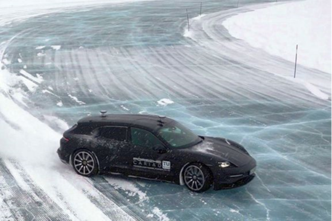

RoboRacer Arena preprint updated
Our updated preprint presents specification-driven construction of tracks for autonomous racing in simulation.
View original ↗DR. AGNES POKS · TU WIEN
I develop predictive and learning-based control methods — from full-size electric vehicles and energy systems to autonomous RC platforms.
Postdoctoral Researcher · TU Wien ↗TU Wien research group ↗
Principal Investigator · AIDA / Austrian Science Fund




ABOUT ME
I completed my doctorate at TU Wien in 2025. My work combines predictive control, energy management and fault diagnosis with experience in research project leadership and industrial software development. From 2011 to 2019, I worked at ZIEHL-ABEGG in R&D, initially as a working student and later as a software engineer.
Experience & CV →Our updated preprint presents specification-driven construction of tracks for autonomous racing in simulation.
View original ↗My dissertation on predictive control for electric refrigeration vehicles was recognized by the Vehicle Industry Association Anniversary Foundation.
View original ↗Principal Investigator of AIDA — AI-Driven Distributed Autonomy at TU Wien.
View original ↗I contribute to Connected Chassis, a TU Wien research project commissioned by the Forschungsvereinigung Automobiltechnik (FAT).
Connected Chassis · TU Wien research portal ↗
2026 · arXiv · preprint
Clement, Mihaela-Larisa; Poks, Agnes; Bartocci, Ezio
Read paper ↗
2026 · arXiv · preprint
Clement, Mihaela-Larisa; Farsang, Mónika; Poks, Agnes; Edelmann, Johannes; Plöchl, Manfred; Grosu, Radu; Bartocci, Ezio
Read paper ↗
2026 · IEEE Transactions on Aerospace and Electronic Systems
Poks, Agnes; Schirrer, Alexander; Gratzer, Alexander L.; Derboghossian, Robert; Scheu, Thomas; Kozek, Martin; Jakubek, Stefan
Read paper ↗2024 · IEEE Access
Poks, Agnes; Schirrer, Alexander; Kozek, Martin
Read paper ↗
2023 · Applied Thermal Engineering
Poks, Agnes; Fallmann, Markus; Fink, Lorenz; Rinnofner, Lukas; Kozek, Martin
Read paper ↗EXPLORE MY WORK
LAB NOTES
Independent code, short tutorials and interactive tools — a space to share experiments as they develop.
Explore Lab Notes →ACADEMIC SERVICE
Local arrangements chair at the 15th International Conference on the Internet of Things, Vienna, together with Philipp Raith.
Conference organising committee ↗Selected partners across the projects in my research portfolio. The project pages explain each collaboration.